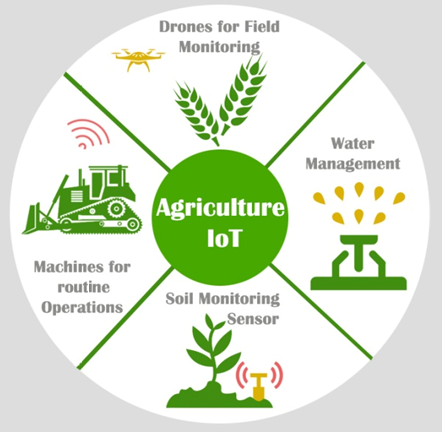
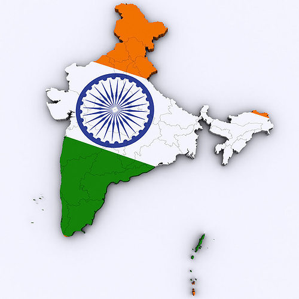

PROJECTS
---------------------------------------------------------

IOT BASED SMART AGRICULTURE MONITORING SYSTEM
Smart agriculture monitoring system or simply smart farming is an emerging technology concept where data from several agricultural fields ranging from small to large scale and its surrounding are collected using smart electronic sensors. The collected data are analyzed by experts and local farmers to draw short term and long term conclusion on weather pattern, soil fertility, current quality of crops, amount of water that will be required for next week to a month etc.
This project consists of Arduino as brain and we are utilizing 5 sensors which measures six different environmental factors that crop’s growth and nourishment depend on:
1) Temperature and humidity sensor.
2) Air Quality / gas sensor.
3) Light sensor.
4) Soil moisture sensor.
5) Barometric pressure sensor.
ONLINE VOTING DATABASE MANAGEMENT SYSTEM
The online voting is a web based application. The word “vote” means to choose from a list, to elect or to determine. the main goal of voting is to come up with leader of the people choice. The online voting is based on SMS sending to voters, to confirmation of vote. this web based is very useful like time saving, work load reduced information available at time it provides security for the data. The proposed online voting system allows the voter to scan the finger print which is then matched with an already save image within database that is retrieved from adhaar card database of the government. This online system voting will avoid the process of physical touching or visiting places and also in pandemic time it is very helpful to conduct elections.
The existing manual Voting system consumes more time for Vote Casting. Voter has to wait for vote polling station to vote for a right candidate.
The objective of the system is a replacement of the traditional system that is in existence. This smart system reduces the time for voting and also the system is reliable, and faster.

Printing India Map
This map of India serves as a visual representation of the country's geographical features, including its diverse topography, major cities, states, and neighboring countries The map showcases the vast expanse of India, encapsulating its varied topography, from the majestic Himalayas in the north to the serene backwaters of the south. Additionally, the map highlights the political boundaries of India's 28 states and 8 union territories, offering an insight into the administrative divisions within the country. With detailed cartographic elements, this map aims to facilitate a comprehensive understanding of India's physical geography and political structure, making it an essential reference tool for educational, analytical, and informational purposes. It aims to serve as a comprehensive guide for researchers, students, and enthusiasts seeking to explore the intricate beauty and diversity of India's geography and regional distinctions.